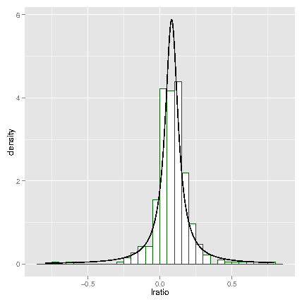

generated from isobar-ptm vignette. pdf version
{isobar} for quantification of PTM datasets
isobar for quantification of PTM datasets
Florian P. Breitwieser, Jacques Colinge
1 Introduction
2 Modification Site Localization
3 Peptide Ratio Calculation
4 Harvesting public PTM databases
1 Introduction
isobar [
1] version 2 includes
modules to facilitate PTM quantification. This vignette describes its
parts, and how to use it to generate quantification reports.
R> library(isobar) ## load the isobar package
Using
isobar, automatic report generation is straight-forward
given proper input files using the script
report/create_reports.R.
When called, it parses the globabl properties file
report/properties.R
and then the
properties.R in the current directory. Below is a small
example
properties.R for creating a PDF Quality Control and XLSX
analysis report:
type="iTRAQ4plexSpectra"
## peaklist files for quantitation, by default all mgf file in directory
peaklist=list.files(pattern="*\\.mgf$")
## id files, by default all id.csv files in directory
identifications=list.files(pattern="*\\.id.csv$")
modif="PHOS" # modification to track (eg PHOS, ACET, MET)
ptm.info.f <- getPtmInfoFromNextprot
spreadsheet.format="xlsx"
Reports will be generated calling
path_to_isobar/report/create_reports.R -peptide from the directory containing the peaklists, identifications and
properties.R.
2 Modification Site Localization
isobar supports PhosphoRS [
5] and Delta
Score [
4] for modification site localization.
PhosphoRS integration
The standalone Java version of PhosphoRS can be downloaded from
http://cores.imp.ac.at/uploads/media/PhosphoRS.zip. It features
a command line interface to a script which rescores localizations of
the modification for each peptide-spectrum match. It uses
XML
files for input and output, which can be generated and parsed by
isobar.
R> # Generate PhosphoRS XML input file based on MGF and identification file
R> # massTolerance: fragment ion mass tolerance (in Da)
R> # activationType: CID, HCD, or ETD
R> writePhosphoRSInput("phosphors.in.xml",
"identifications.id.csv","peaklist.mgf",
massTolerance=0.5,activationType="CID")
After calling PhosphoRS (
java -jar phosphoRS.jar phosphors.in.xml phosphors.out.xml), the resulting
XML file can be read:
R> # Read PhosphoRS XML output file
R> # simplify: if TRUE, a data.frame is returned, else a list
R> # besthit.only: if TRUE, only the best localization per spectrum is returned
R> readPhosphoRSOutput("phosphors.out.xml",simplify=TRUE,besthit.only=TRUE)
getPhosphoRSProbabilities is a convenience function calling
the writer, the script, and the reader in succession.
R> getPhosphoRSProbabilities("identifications.id.csv","peaklist.mgf",
massTolerance=0.5,activationType="CID",
phosphors.cmd="java -jar phosphoRS.jar")
Delta Score calculation
The Mascot Delta Score can be calculated directly by the parser
mascotParser2.pl and thresholded (
e. g. -minDeltaScore=10). For CSV identification files which contain all hits for each spectrum (not just the best one), the function
calc.delta.score within the R package is provided.
Using PhosphoRS and Delta Score in Report Generation.
When generating an IBSpectra object from peaklist and identifications,
via
readIBSpectra's argument
annotate.spectra.f a
function can be plugged in to extend or modify the identification
information. This can be used to calculate scores and filter
localization scores with
filterSpectraDeltaScore) or
annotateSpectraPhosphoRS.
R> # filterSpectraDeltaScore calls calc.delta.score
R> # if no column named delta.score is present in the data frame
R> # identifications below a min.delta.score are REMOVED
R> ib <- readIBSpectra("identifications.id.csv","peaklist.mgf",
annotate.spectra.f=function(...)
filterSpectraDeltaScore(...,min.delta.score=10))
R> # filterSpectraPhosphoRS calls PhosphoRS to caluclate PhosphoRS probabilities
R> # identifications below a min.prob (PhosphoRS peptide isoform probability)
R> # are marked to be NOT QUANTIFIED (use.for.quant=FALSE), but not removed
R> ib <- readIBSpectra("identifications.id.csv","peaklist.mgf",
annotate.spectra.f=
function(...) filterSpectraPhosphoRS(...,min.prob=0.9,
phosphors.cmd="java -jar PhosphoRS.jar"))
This can be used in report generation, too, where the
readIBSpectra.args can be set accordingly in the report
properties file
properties.R:
readIBSpectra.args = list(annotate.spectra.f=filterSpectraDeltaScore)
or
readIBSpectra.args = list(annotate.spectra.f=filterSpectraPhosphoRS)
3 Peptide Ratio Calculation
All functions which are available to calculate ratios on protein level
can also be used for peptides. The same noise model is appropriate for
both.
R> data(ib_phospho)
R> data(noise.model.hcd)
R> head(proteinGroup(ib_phospho)@peptideInfo)
protein peptide start.pos
2072 A1L390-1 SPLSPTETFSWPDVR 1037
2074 A1L390-2 SPLSPTETFSWPDVR 570
2076 A1L390-3 SPLSPTETFSWPDVR 981
1299 A6NKT7 LLLDLPLQTPHK 1170
783 O00264 GDQPAASGDSDDDEPPPLPR 48
2045 O14497-1 SPFLHSGMK 1604
modif
2072 iTRAQ4plex_Nterm:PHOS:::PHOS::::::::::::
2074 iTRAQ4plex_Nterm:PHOS:::PHOS::::::::::::
2076 iTRAQ4plex_Nterm:PHOS:::PHOS::::::::::::
1299 iTRAQ4plex_Nterm:::::::::PHOS:::iTRAQ4plex_K:
783 iTRAQ4plex_Nterm:::::::PHOS::::::::::::::
2045 iTRAQ4plex_Nterm::::::PHOS:::iTRAQ4plex_K:
R> 10^estimateRatio(ib_phospho,noise.model.hcd,peptide="SPLSPTETFSWPDVR")
114 115 116 117
114 1.0000 0.3089 1.4355 1.642
115 3.2376 1.0000 4.6498 5.319
116 0.6966 0.2151 1.0000 1.144
117 0.6091 0.1880 0.8742 1.000
By giving a matrix to
estimateRatio, we can calculate ratios for peptides with specific modifications:
R> pep.n.modif <- unique(apply(fData(ib_phospho)[,c("peptide","modif")],2,cbind))
R> print(head(pep.n.modif))
peptide
[1,] "AAATPESQEPQAK"
[2,] "AAEAGGAEEQYGFLTTPTK"
[3,] "AAEEQGDDQDSEK"
[4,] "AAPPPGSPAK"
[5,] "AAVGQESPGGLEAGNAK"
[6,] "AAVLSDSEDEEK"
modif
[1,] "iTRAQ4plex_Nterm:::::::PHOS::::::iTRAQ4plex_K:"
[2,] "iTRAQ4plex_Nterm:::::::::::PHOS::::::::iTRAQ4plex_K:"
[3,] "iTRAQ4plex_Nterm:::::::::::PHOS::iTRAQ4plex_K:"
[4,] "iTRAQ4plex_Nterm:::::::PHOS:::iTRAQ4plex_K:"
[5,] "iTRAQ4plex_Nterm:::::::PHOS::::::::::iTRAQ4plex_K:"
[6,] "iTRAQ4plex_Nterm:::::PHOS::PHOS:::::iTRAQ4plex_K:"
R> estimateRatio(ib_phospho,noise.model.hcd,channel1="114",channel2="115",
peptide=head(pep.n.modif),combine=FALSE)[,c("lratio","variance",
"n.spectra","p.value.rat")]
lratio variance n.spectra p.value.rat
[1,] -0.6978 0.01034 2 3.394e-12
[2,] NaN Inf 0 NaN
[3,] 0.1388 0.01053 2 8.800e-02
[4,] -1.0794 0.04167 1 6.197e-08
[5,] -0.9656 0.02407 1 2.420e-10
[6,] -0.2164 0.08306 7 2.264e-01
R>
A ratio distribution can be calculated based on peptide ratios:
R> suppressPackageStartupMessages(library(distr))
R> suppressPackageStartupMessages(library(ggplot2))
R> peptide.ratios <- peptideRatios(ib_phospho,noise.model=noise.model.hcd,
combn=matrix(c("114","116"),ncol=1))
R> lim <- max(abs(peptide.ratios$lratio),na.rm=TRUE)
R> peptide.distr.cauchy <- fitCauchy(peptide.ratios$lratio)
R> pseq <- seq(from=-lim,to=lim,length.out=1000)
R> ggplot() +
geom_histogram(aes(x=lratio,y=..density..),data=peptide.ratios,binwidth=0.05,
color="darkgreen",fill="white") +
geom_line(aes(x=x,y=y),color="black",
data=data.frame(x=pseq,y=d(peptide.distr.cauchy)(pseq)))

Correction with protein ratios.
The observed change in concentration of modified peptides in one
condition versus another is integrating two separate modes of
regulation [
6]:
- Protein expression change
- Modification state change
In many cases, it thus can be advisable to conduct separate MS
quantification runs of the peptides enriched for the modification of
interest, and the global proteome. In the report generation, data from
other experiments can be integrated using the property
compare.to.quant in
properties.R:
load("../proteome/quant.tbl.rda") # load proteome quantification table
compare.to.quant=list(proteome=quant.tbl) # set property
rm(quant.tbl)
Peptide ratios can also be corrected with proteome ratios of a
separate experiment, when giving as
peptide argument a
matrix or
data.frame with columns for 'peptide',
'modif', and 'correct.ratio'. 'correct.ratio' is a log
10 ratio
which will be used to adjust the one calculated for the specific
modified peptide.
R> peptides <- pep.n.modif[1:5,]
R> orig.ratio <- estimateRatio(ib_phospho,noise.model.hcd,channel1="114",channel2="115",
peptide=peptides,combine=FALSE)[,c("lratio","variance")]
R> peptides.c <- cbind(peptides,correct.ratio=c(0,-1,1,2,-2))
R> corr.ratio <- estimateRatio(ib_phospho,noise.model.hcd,channel1="114",channel2="115",
peptide=peptides.c,combine=FALSE)[,c("lratio","variance")]
R> data.frame(peptides.c,orig.ratio,corr.ratio)
peptide modif
1 AAATPESQEPQAK iTRAQ4plex_Nterm:::::::PHOS::::::iTRAQ4plex_K:
2 AAEAGGAEEQYGFLTTPTK iTRAQ4plex_Nterm:::::::::::PHOS::::::::iTRAQ4plex_K:
3 AAEEQGDDQDSEK iTRAQ4plex_Nterm:::::::::::PHOS::iTRAQ4plex_K:
4 AAPPPGSPAK iTRAQ4plex_Nterm:::::::PHOS:::iTRAQ4plex_K:
5 AAVGQESPGGLEAGNAK iTRAQ4plex_Nterm:::::::PHOS::::::::::iTRAQ4plex_K:
correct.ratio lratio variance lratio.1 variance.1
1 0 -0.6978 0.01034 -0.6978 0.01034
2 -1 NaN Inf NaN Inf
3 1 0.1388 0.01053 -0.8612 0.01053
4 2 -1.0794 0.04167 -3.0794 0.04167
5 -2 -0.9656 0.02407 1.0344 0.02407
As appearent, the variance stays the same also for corrected
ratios. If a fourth column
variance of the
peptide
argument reports the variance of the correction ratio, it is added to
the calculated ratio's variance (assuming independence).
4 Harvesting public PTM databases
neXtProt [
3] and PhosphoSitePlus
[
2] provide information on experimentally
determines post-translational modifications. neXtProt focuses on man,
and PhosphoSitePlus on man and mouse. Both are manually curated and
annotate thousands of residues of post-translationally modified
proteins.
isobar provides functions to gather their information on identified
proteins.
R> ptm.info <- getPtmInfoFromPhosphoSitePlus(proteinGroup(ib_phospho),modif="PHOS")
R> ptm.info <- getPtmInfoFromNextprot(proteinGroup(ib_phospho))
R> head(ptm.info)
.id isoform_ac quality description evidence first_position last_position
1 A1L390 A1L390-1 GOLD Phosphoserine EXP 76 76
2 A1L390 A1L390-1 SILVER Phosphoserine EXP 433 433
3 A1L390 A1L390-1 GOLD Phosphoserine Curated 533 533
4 A1L390 A1L390-1 GOLD Phosphoserine EXP 576 576
5 A1L390 A1L390-1 GOLD Phosphoserine EXP 577 577
6 A1L390 A1L390-1 SILVER Phosphoserine EXP 614 614
modification.name modification.accession position
1 Phosphoserine PTM-0253 76
2 Phosphoserine PTM-0253 433
3 Phosphoserine PTM-0253 533
4 Phosphoserine PTM-0253 576
5 Phosphoserine PTM-0253 577
6 Phosphoserine PTM-0253 614
For reports, the function can be selected via the property
ptm.info.f in
properties.R:
protein.info.f = getPtmInfoFromNextprot
References
- [1]
-
F. P. Breitwieser, A. Müller, L. Dayon, T. Köcher, A. Hainard, P. Pichler,
U. Schmidt-Erfurth, G. Superti-Furga, J.-C. Sanchez, K. Mechtler, K. L.
Bennett, and J. Colinge.
General statistical modeling of data from protein relative expression
isobaric tags.
J Proteome Res, 10(6):2758-2766, Jun 2011.
- [2]
-
P. V. Hornbeck, J. M. Kornhauser, S. Tkachev, B. Zhang, E. Skrzypek, B. Murray,
V. Latham, and M. Sullivan.
Phosphositeplus: a comprehensive resource for investigating the
structure and function of experimentally determined post-translational
modifications in man and mouse.
Nucleic Acids Res, 40(Database issue):D261-D270, Jan 2012.
- [3]
-
L. Lane, G. Argoud-Puy, A. Britan, I. Cusin, P. D. Duek, O. Evalet, A. Gateau,
P. Gaudet, A. Gleizes, A. Masselot, C. Zwahlen, and A. Bairoch.
nextprot: a knowledge platform for human proteins.
Nucleic Acids Res, 40(Database issue):D76-D83, Jan 2012.
- [4]
-
M. M. Savitski, S. Lemeer, M. Boesche, M. Lang, T. Mathieson, M. Bantscheff,
and B. Kuster.
Confident phosphorylation site localization using the mascot delta
score.
Mol Cell Proteomics, 10(2):M110.003830, Feb 2011.
- [5]
-
T. Taus, T. Köcher, P. Pichler, C. Paschke, A. Schmidt, C. Henrich, and
K. Mechtler.
Universal and confident phosphorylation site localization using
phosphors.
J Proteome Res, Nov 2011.
- [6]
-
R. Wu, N. Dephoure, W. Haas, E. L. Huttlin, B. Zhai, M. E. Sowa, and S. P.
Gygi.
Correct interpretation of comprehensive phosphorylation dynamics
requires normalization by protein expression changes.
Mol Cell Proteomics, 10(8):M111.009654, Aug 2011.